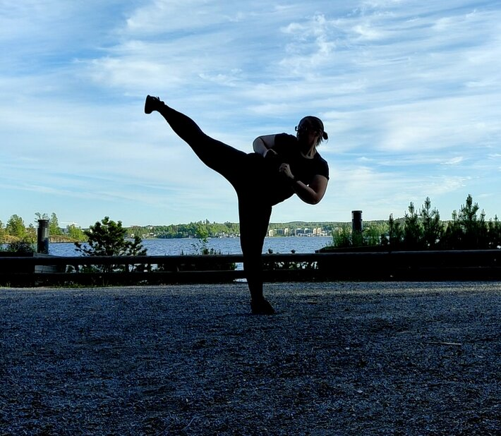

Taekwondo:
 I've been doing taekwondo actively since 2016. I had originally started on childrens basics -course when I was in elementary school, but had to drop it soon due to a slight injury. When my friend got interested about taekwodno years later, I decided to go to basics -course with her and so began my taekwondo journey.Taekwondo soon became a huge part of my character. I went to practises about 5 times a week and made friends along the way. I started to volunteer on different events and began helping with childrens group when I was barelly a yellow belt.
When I was on my green belt I started as an instructor for adults basics course. By the time I had reached my blue belt I started at our taekwondo clubs board as secretary and later in life I had obtained myself a duties of vice president and managed for exmaple clubs social media, addvertising, web site maintanance etc. In 2023 I finally got my first degree black belt.